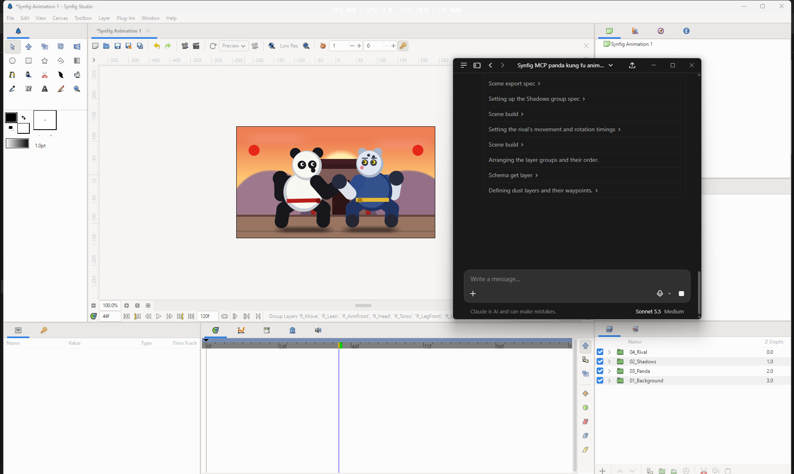
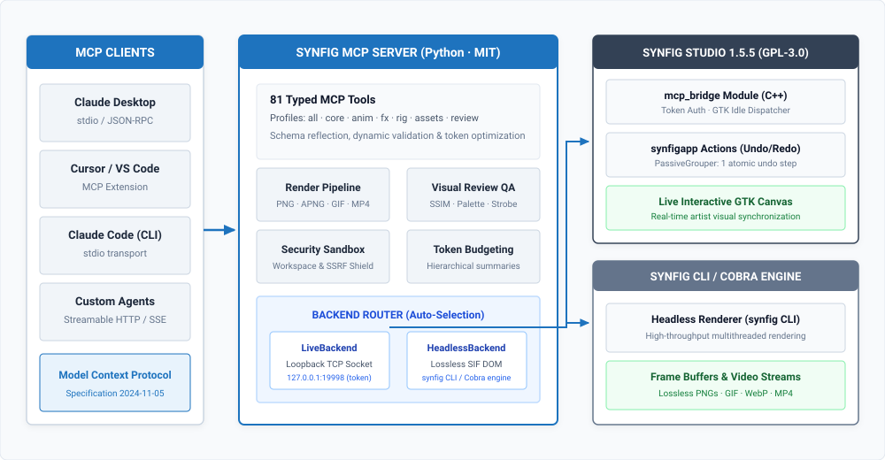

Connect Claude, Cursor, and any MCP-compatible AI agent directly to Synfig Studio. Automate live vector canvases, bone skeleton hierarchies, and headless render pipelines — with zero limits, forever.

Synfig MCP is open-source software. There are no subscriptions, no usage tiers, no API bills, and no creative limits. Run it on your machine, your server, or your CI pipeline.
MIT-licensed Python server. GPL-3.0 C++ bridge. No paid plans. No free tier with limits. The full product, free.
MIT LicenseRender as many frames, sequences, and videos as your hardware can handle. No quota, no throttle, no watermarks.
Local ComputeUnlimited layers, bones, waypoints, and timeline length. No restrictions on project complexity or scene size.
No LimitsYour animation data never leaves your machine. All MCP calls run over localhost. No cloud, no telemetry, no analytics.
Offline-FirstVideo diffusion models produce non-editable pixel sequences. Synfig MCP gives your AI agent structured control over real, editable vector artwork.
> tools/call: scene_build(spec={ layers: ["Circle_Ball", "Shadow_Oval"] })
< GTK PassiveGrouper: committed 2 vector layers
> tools/call: anim_waypoint_set(layer="Circle_Ball", param="scale", time="00:00:00:12", val=[1.3, 0.7])
< GTK main thread: TCB tangent eased
> tools/call: render_frame(time="00:00:00:12")
< Frame rendered in 38ms (SSIM 0.9982 · Safe area OK)
A production-grade bridge between AI agents and Synfig Studio's native C++ internals — not a wrapper, not a plugin, a first-class MCP server.
Edits made by AI agents are dispatched directly onto Synfig Studio's GTK event loop via synfigapp::PassiveGrouper. Mutations appear instantly on the artist's screen, participate fully in the undo/redo stack (Ctrl+Z), and coexist safely with manual mouse interactions.
Operates without a GUI by reading and writing .sif, .sifz, and .sfg XML natively. Ideal for CI pipelines and cloud render farms.
Complete API surface across 7 tuned profiles — core, anim, fx, rig, assets, review, all — optimizing AI context budgets.
Closes the feedback loop: render frames, measure SSIM, audit color palettes, check broadcast safe areas, and detect photosensitive strobe risks.
Automated skeleton construction, hierarchical bone linking, cutout SVG/PNG binding, and one-call pose presets — idle, walk, run, jump, punch.
14 built-in production effects recipes (anime speedlines, halftone, glow, lens flare, motion blur) applied in a single atomic undo step. Asset search pulls CC0/MIT-licensed vectors and audio from curated repositories with SSRF-protected download hardening.
A three-layer bridge: a standard MCP Python server, a native C++ GTK dispatch bridge, and Synfig Studio's lossless SIF document model.

JSON-RPC 2.0 over stdio. Compatible with any MCP client — Claude, Cursor, Cline, or custom integrations. Tool schemas are introspectable at runtime.
All canvas mutations are safely marshalled onto Synfig Studio's GTK main thread using PassiveGrouper transactions. Zero race conditions, full undo history participation.
Native .sif / .sifz XML serialization preserves all spline mathematics with full floating-point precision. No compression, no information loss, no proprietary lock-in.
Get Synfig MCP connected to your AI client in three steps. Select your OS to see the exact commands.
Requires Python 3.12+. Install from PyPI:
uvx synfig-mcpDownload the prebuilt Windows bundle with the native C++ mcp_bridge module included:
uvx synfig-mcpchmod +x synfig-studio-1.5.5-mcp.AppImage
./synfig-studio-1.5.5-mcp.AppImageRun headless rendering and automation inside the official isolated container:
docker run -i --rm \
-v "$(pwd)/animations:/workspace" \
ghcr.io/anusara-bemal/synfig-mcp:latestSelect your client and copy the ready-to-paste JSON configuration:
Filter by functional profile or search by keyword. Each tool has a typed parameter signature inspectable by any MCP client.
The server also speaks the full MCP protocol: guided prompts your client can run as slash-commands, and readable resources you can attach to context.
Walks through building a complete animated scene: background, shapes, keyframes and a preview render.
Slices a character sheet, builds a jointed cut-out rig and applies a motion cycle.
Renders a frame or sequence and critiques it with the objective review metrics.
Plans and produces a full multi-shot project end to end with the production pipeline.
Diagnoses bridge connectivity, backend selection and render prerequisites.
Index of every guide, scene template and review rubric the server exposes.
Guidance on overview, profiles, declarative_build, animation, characters, review and production.
Ready-to-use scene_build specs: bouncing_ball, logo_sting, lower_third.
Vision critique rubrics: general, cinematic, dark_fantasy, shonen_action, supernatural_noir.
Built with sandboxed process boundaries, token authentication, and clean open-source licensing designed for production deployment.
The native bridge binds strictly to 127.0.0.1:19998. Non-loopback attempts are rejected at the socket layer. Every JSON-RPC dispatch requires a per-session ephemeral bearer token.
Document writes, reads, and asset imports are restricted to allowed workspace root directories. Directory traversal attempts (../) and absolute path escapes are blocked at the Python layer.
Remote asset URLs are checked against RFC 1918 private IP ranges to prevent intranet scanning. Imported SVGs pass through XML entity stripping to prevent XXE injection and billion-laugh bomb attacks.
Synfig MCP operates entirely on localhost. No analytics, no crash reporting, no license pings. Your animation data never leaves your machine under any configuration.
Python server: MIT License — use freely in any project. C++ bridge: GPL-3.0 — copyleft, source must remain open. Full compliance documentation provided.
Headless render jobs include configurable timeout and frame-count limits to prevent runaway CI tasks from exhausting disk space or compute budget in automated pipelines.